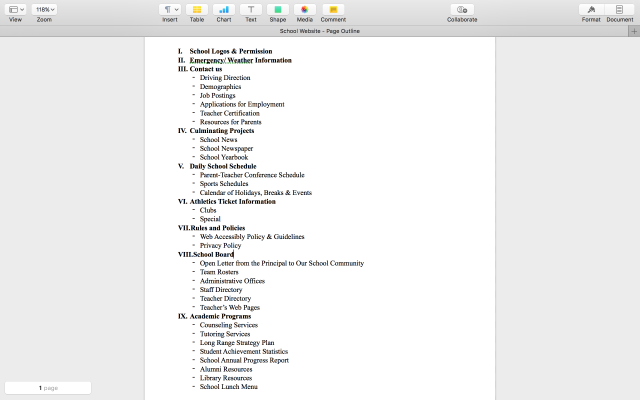

Week 5 (updated on 9/25)
On Tuesday, we were introduced to a new line of code, <meta charset=" utf-8" />, which allows the presence of special characters like Chinese.
While working on HTML Summary 1, we learnt that tags like <header>, <nav>, and <main> are called semantic tags and usually contain blocks of code. Formatting tags, on the other hand, are used to change style or appearance of the text. Like Microsoft Word, HTML allows us to highlight, underline, or cross out certain words. Coding subscript and superscript is also a no-brainer.
Shocked by the fact that <bold> and <italics> function like <strong> and <emphasized>, I pre-studied the basics of CSS. It turned out that only <bold> and <italics> work in CSS.
Thursday's class reminded me of the days in AP Computer Science last year, when the instructor gave you a difficult task and expected you to figure the code out by yourself. Mr. Fig wanted us to re-create the semantic tags table using <tr>, <td>, rolspan, and colspan. I sort of messed everything up until Vincent Ho helped me out. Because I spent relative more time doing this, I think creating and formatting tables was the central concept of the week.
Except the table assignment, everything was very successful this week. If my brain functioned well enough on Thursday, I could finish the task and continue with Codecademy in class.


Week 4 (updated on 9/18)
To start with, let me introduce my new friend, DIV.
<div></div> draws division to the content and allows the programmer to omit <br/> breaks. There is absolutely no problem with using breaks. However, if your content has 100 lines, doing so is just a waste of time and effort.
Following the Web Design and Development I packet, we created an unordered list in each division. Lists are not new to me, since I have practiced them in codecademy a few days in advance. We also linked the homepage with its subpages, including accessibility, usability, and graphics. What amazed me was the code for "skip to main content".
As stated above, I think the key concept communicated this week is the use of <div> tag and unordered lists. I would like to do more of "skip to __ " (which I think is really cool) if I could repeat this week again.
Week 3 (updated on 9/11)
We started this week with a group activity, in which we planned out the structure of our HAS School Website. We were told to identify no more than ten major categories and fill them with several minor ones. Although it seemed easy, it took us an entire period to complete the task! Because we usually navigate different types of websites, we have different opinions on how the content should be classified.
On Thursday, we coded the skeleton of our website using HTML. Syntax for this school webpage was similar to that of My First Website. To be honest, linking the homepage to nine different subpages was extremely tedious.
As usual, I disagreed with none of the arguments taught in class.
The central concept communicated this week was to brainstorm your ideas CAREFULLY before coding them out. For example, one of our major categories was "Parent-Teacher Conference Schedule", which had "Daily School Schedule" under it. I did not realize that they should be reversed until I was done with all the coding. As a consequence, I had to edit all ten webpages, which was not the best way to consume time HAHAHA.
If I could repeat this week, I would double-check to see if all categories are in the right spot before moving on to the IDE.

Week 2 (updated on 9/4)
The exciting part of Comm Design has finally came! This week, we not only learnt about the basic skeleton, but also tried to mess with the background color, font color, and font size. Moreover, we added links to other websites.
Because I was introduced to HTML as early as 8th Grade, I did not find anything difficult or unfamiliar. Unlike Java and C++, it does not follow algorithms such as divide and conquer. However, its open and close tags act just like the curly brackets of Java methods.
I disagreed none of the concepts discussed in class. Mr. Fig’s style of teaching basics was almost the same as Mr. Kerr’s did back in Middle School Computer Science.
To me, the most important concept of coding a website is to understand the syntax. A classmate panicked because part of her code did not work as intended. We later found out that she was missing a closing tag at the end of the paragraph.
This week was very successful. If given a chance to repeat it, I would work on my speed of coding. Being an experienced programmer, I should have spent lesser time on the syntax and more time on the design.
{kind=link}